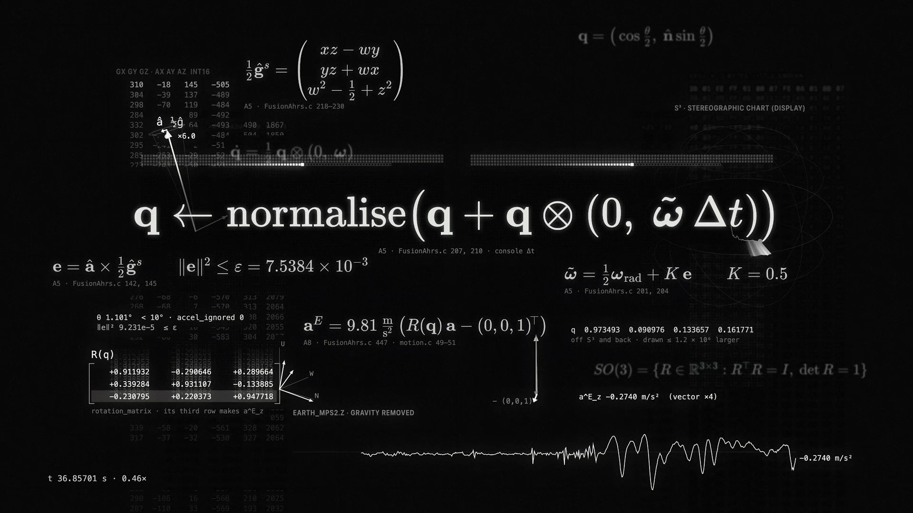
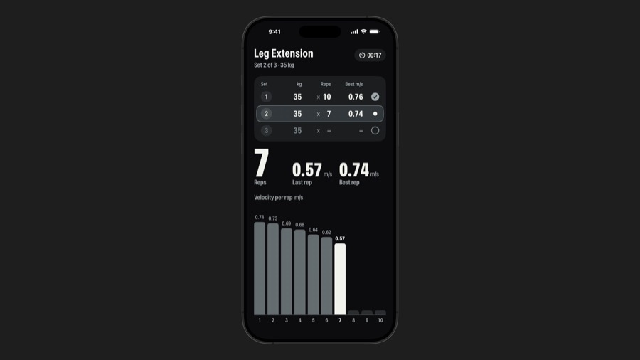

Show the work.
We have no product to sell lifters yet, but we have something better for this stage: a real build, with real numbers, failures and decisions. For the next four weeks we publish that, for the people who lift, in the time a founding team actually has.
The strategy, in six decisions
Everything in the calendar follows from these. If one of them changes, the calendar changes with it.
Who it is for
People who train on machines and want to know they are progressing, without typing it all in.
The lifter who logs in the Notes app, forgets half the sets, and never looks at it again. Gym owners are a second audience, reached only through Justus's posts (two in four weeks), because the gym is how the sensor gets to the lifter.
What content must do now
Earn attention and learn from it. Not sell.
- Build a small, real following of lifters who care about tracking.
- Learn how they track today and what they want after a set (polls, questions, comments).
- Make the team credible to the gyms and partners we will need.
The angle we own
The honest build log of a tracker that counts for you.
Most fitness tech shows finished promises. We show the sensor, the maths, what broke and what we changed, every claim labelled as shipped, in review or still an idea. That honesty is the brand.
Founder-led vs product-led
Founder-led: LinkedIn and the field notes. Adam writes about decisions and failures, first person. Justus covers the gym side.
Product-led: Instagram and the short-video repurposes. The sensor, the screen, the number at the end of a set. Faces optional, voice never salesy.
Cadence and time
2 originals a week, 4 repurposes. About 4 to 5 hours.
- Instagram: 1 Reel (Tue), 1 carousel (Thu), Stories (Sat).
- LinkedIn: Adam weekly (Wed), Justus every other Tue.
- TikTok and YouTube Shorts: the week's Reel, re-cut (Sun).
- Field notes: one long piece every two weeks.
What we deliberately skip
- X / Twitter lifters are not there; time better spent on Reels.
- A newsletter until there is a list worth writing to; collect interest first.
- Reddit posting self-promotion is punished; we read r/weightroom and r/homegym for language and questions only.
- Paid ads nothing to buy yet.
Platforms and their jobs
Each platform gets one job and its own native format. Same source material, different cut, never the same post pasted five times.
Reels for reach, carousels for saves, Stories for asking questions. Where gym people already follow brands and coaches.
Decisions, failures and numbers in first person. Reaches gym operators, engineers, partners and future hires.
Long pieces on this site (/article). Every big post points here; every short post is cut from here.
The week's Reel, re-cut with a new first line and native captions. No extra filming.
Polls, question boxes and rough behind-the-scenes. The answers feed the next week's posts.
Times are Europe/Prague. Summer time ends Sunday 25 October: CEST (UTC+2) before, CET (UTC+1) after. Slots follow the 2026 studies from Sprout Social and Buffer (Instagram strongest Tue–Thu midday to evening, LinkedIn Tue–Thu with Wednesday 16:00 the top slot in Buffer's data, TikTok's single best slot Sunday 09:00) and our own guess that lifters scroll before evening training. Treat them as a starting point: after week 2, move any slot that clearly underperforms.
Four pillars we post from
Every piece belongs to one. If an idea fits none, it is not for this stage.
The lifter's experience: the count appears, the rest clock runs, the score rises. Screens and real sets.
The maths of one rep, made visual: readings, gravity, speed, distance. Our most distinctive material.
Field notes from the build: the leg extension that said no, the battery diary, ghost reps. Status always labelled.
Questions to lifters. Their answers decide what we build next, and we say so in public.
The next four weeks
Tap a piece for its hook, purpose, asset, call to action and what it turns into. Asset labels: have it already exists, make design from existing material, film needs new footage, depends waits on something else.
Before Monday 5 October
Set up once (about 2 hours)
- Decide the public name and handle for Instagram, TikTok and YouTube. We don't have one yet; nothing below works without it.
- Instagram bio: one line ("A sensor that counts your reps, built in public") and the field notes link.
- Cut the first Reel from the Inside one rep film (A) to 9:16 with captions.
- Pick a free, privacy-friendly page counter for this site, so field-note reads are measurable.
Every week (about 4 to 5 hours)
- Mon, 20 min: look at last week's numbers below; confirm this week's pieces.
- Fri, 45 min at the test gym: film everything the next week needs, in one go.
- Fri–Sun, 2 h: edit the Reel and carousel; write Adam's LinkedIn post.
- Sun, 30 min: re-cut the Reel for TikTok and Shorts; schedule the week.
- Daily, 10 min: answer every comment and DM; note good questions in the idea list.
One piece of work, five posts
The flow every two weeks. Each step is a new cut for its platform, not a copy.
What we already have
Enough for the whole first month. The videos are in Desktop / Workout tracker; the drawings are in the repository's renders.




What we measure, and what we ignore
At this stage, reach is noise. We look for signs that the right people care and talk back. Targets are first guesses; reset them after week 2.
| Signal | Why it matters now | Starting target, month 1 |
|---|---|---|
| Saves on carousels | People keep what explains something; the best proxy for "useful". | Rising week on week |
| Shares of Reels | Lifters sending us to their training partner is reach that means something. | Rising week on week |
| Real answers in comments, polls and DMs | The research we can't get any other way. Count answers, not likes. | About 50 poll answers, 10 useful comments a week |
| Lifters who ask to try it | The first sign of pull. Keep a list; they become testers at the test gym. | 5 to 10 names |
| Conversations with gyms or partners from LinkedIn | The secondary audience, for Justus. | 2 to 3 real conversations |
| Field-note reads | Whether the long pieces are worth their cost. Needs the page counter. | Measured from week 2 |
Ignored for now: follower count on its own, impressions, likes, and anything from paid boosts.
House rules
Say what is true
Every claim carries its status: shipped, in review, or an idea. No battery life, no accuracy percentages, no dates we have not hit.
Protect people and places
Never name our test gym. Never show a member's face or screen without written consent. Film our own team.
Don't give away what is not decided
New mechanisms we may want to protect (for example the collar idea) stay off public channels until we decide how to protect them.